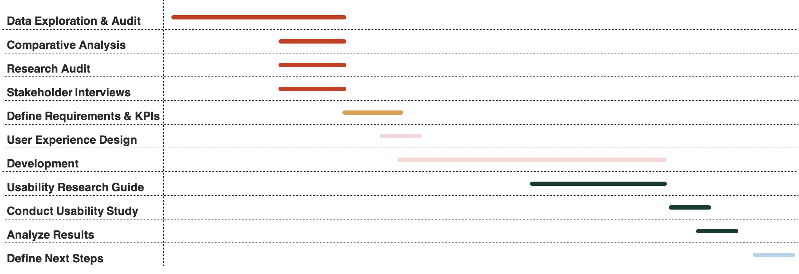

Product Manager Intern
Content & Personalization
I was responsible for working with a cross-functional team to create a more personalized experience within the app. My final deliverable was two-fold:
- Build a demo of the feature
- Outline next steps based
Please note: due to an NDA I am unable to share deliverables or project specifics.
Internship Overview
My summer can be broken down into five stages.
Conducting and auditing RESEARCH,
Outlining REQUIREMENTS & KPIs,
Monitoring and coordinating DEVELOPMENT,
Planning and executing a USABILITY STUDY,
Determining NEXT STEPS.

Project Highlights

Background Research
Gained insight into the problem by auditing existing research, investigating data capabilities, and conducting my own research which included a comparative analysis and stakeholder interviews.

Requirements Documentation
Created a requirements document to share with stakeholders and project partners. The document included:
- Identified target users
- Established experiences and features and their priority level
- Partnered with Data Science to determine trackable KPIs and success criteria
- Determined key milestones and a project timeline
- Outlined potential dependencies and assumptions

Development
Monitored and coordinated efforts across the team to ensure we met our deadline. Reprioritized throughout the development process
Evaluation
I conducted a usability study to evaluate the effectiveness of the solution. I was responsible for managing the process end-to-end, which included:
- Developing research protocol, including: tasks, script, and questions
- Recruiting users
- Administering the usability study
- Distilling findings and sharing with stakeholders
Define Next Steps
Outlined immediate and long term next steps based on research findings and updated documentation to help the next PM continue working on the project